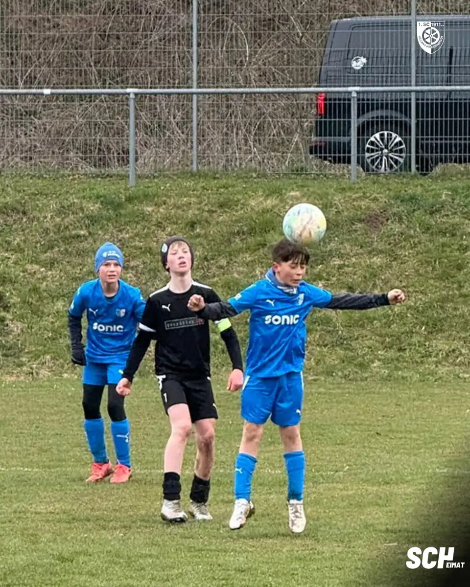
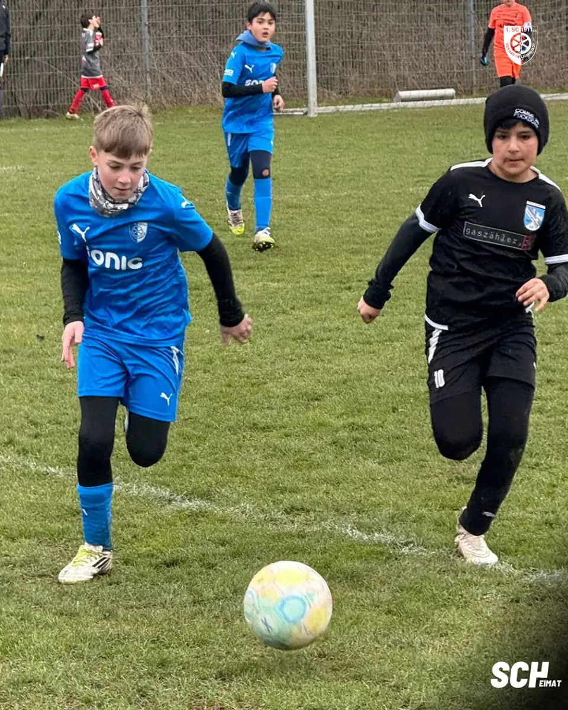
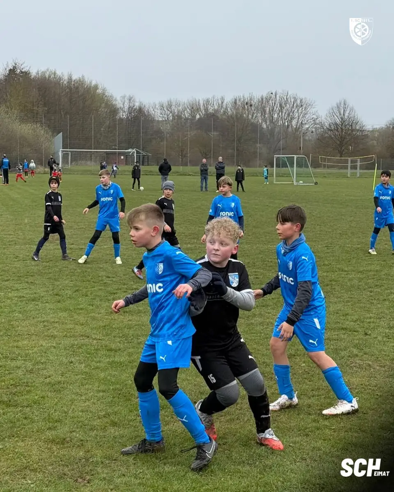
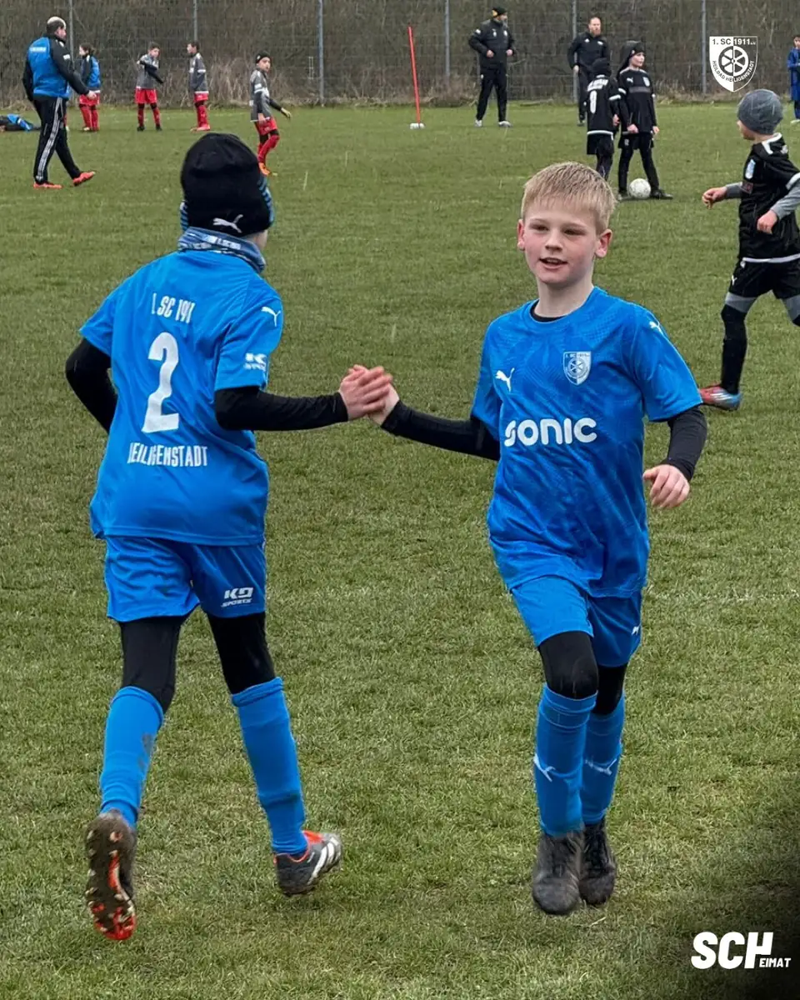
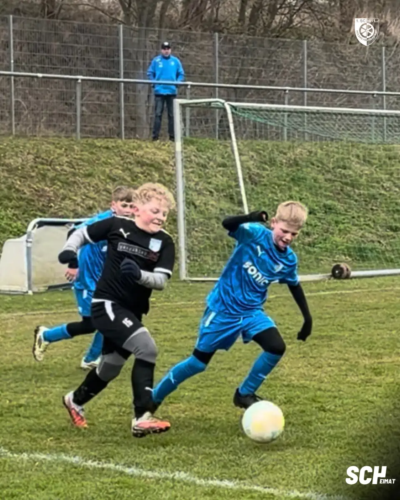
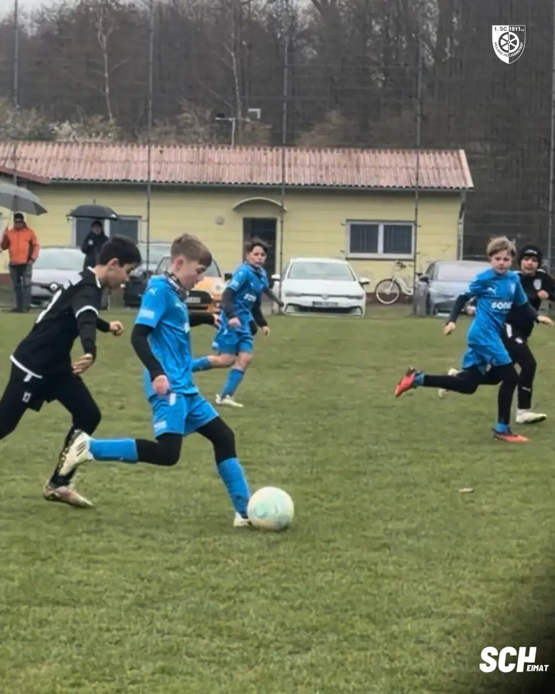
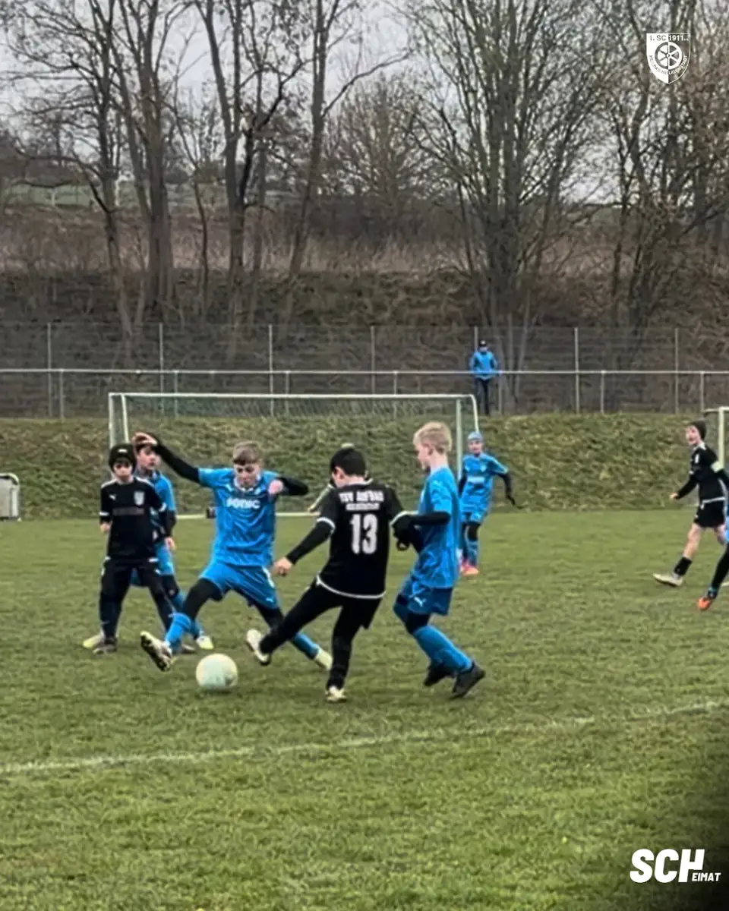
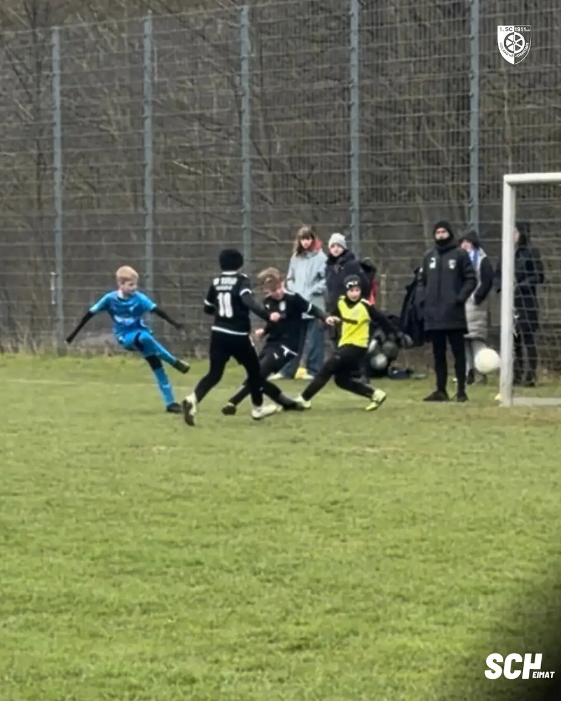
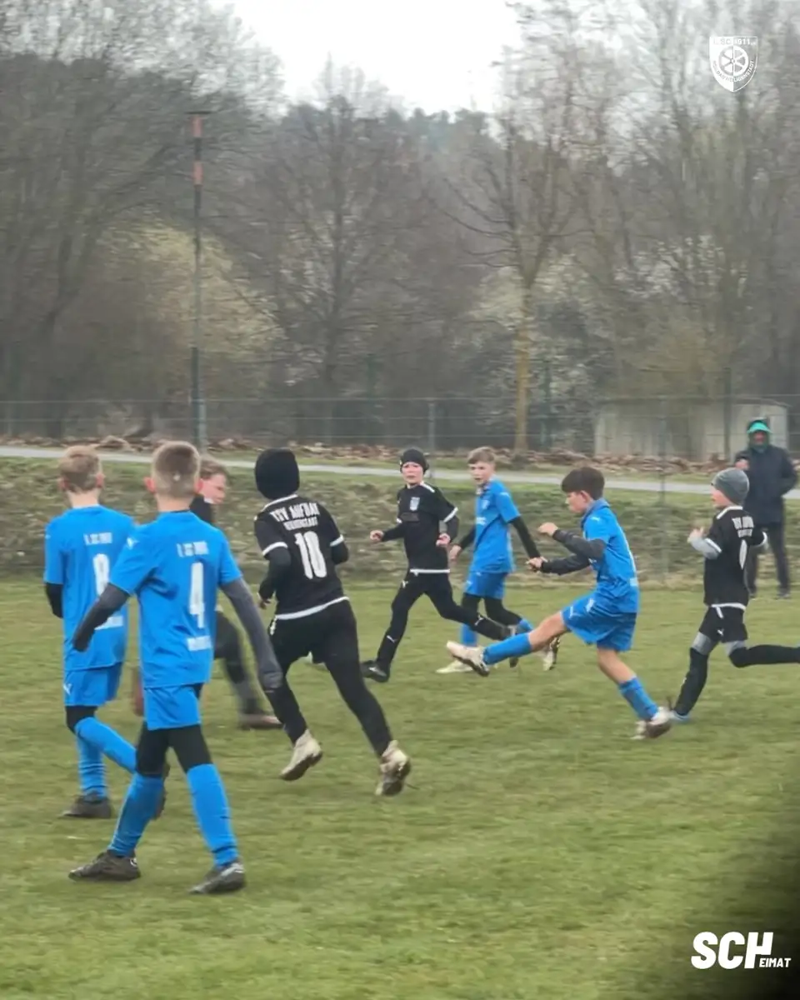
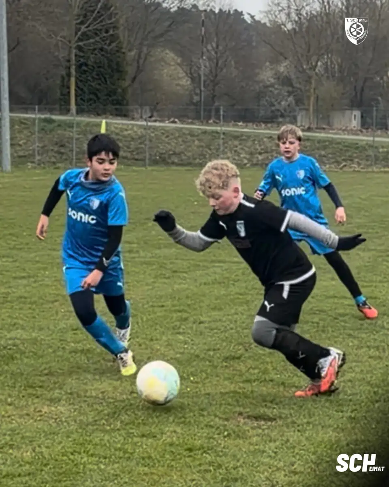

U11 belohnt sich mit verdientem Sieg
Nasskaltes Wetter, klare Marschroute
3. Spieltag in der Kreisliga A – und direkt das Stadtderby gegen den TSV Aufbau Heiligenstadt. Die Bedingungen waren alles andere als einfach: nasskalt, ein tiefer Platz am Stelzenberg und damit genau die Voraussetzungen, die sauberes Kombinationsspiel schwierig machen. Die Vorgabe war daher klar: einfacher, geradliniger Fußball. Und genau das setzten unsere Jungs von Beginn an stark um.
Defensiv stabil, offensiv zielstrebig
Von der ersten Minute an war zu sehen, dass unsere U11 hellwach war. In den Zweikämpfen präsent, konsequent im Klären der Situationen und immer bereit, füreinander zu arbeiten. Und wenn doch einmal ein Angreifer durchkam, war auf unseren Keeper Timo Sittel absolut Verlass.
Nach vorne spielten unsere Jungs immer wieder mutig und direkt – genau der richtige Ansatz auf diesem Platz. Eine dieser Aktionen nutzte John Grotlüschen (2.) zur frühen Führung und brachte unsere Farben erstmals an diesem Tag zum Jubeln.
Spielkontrolle und die richtige Antwort auf Druck
Auch nach der Pause blieb unsere Mannschaft die tonangebende Elf. Mit viel Einsatz und klarem Spiel nach vorne wurde der Druck hochgehalten. Belohnt wurde das mit dem 2:0 durch einen sehenswerten Fernschuss von Sammy Müller (36.). Doch wer dachte, das Derby sei damit entschieden, lag daneben. Der TSV Aufbau zeigte Moral, kam zurück ins Spiel und verkürzte. Plötzlich war wieder Spannung drin, das Spiel wurde offener und intensiver.
Starke Nerven bis zum Schluss
In dieser Phase bewies das Team von Trainer Pascal Köhler die richtige Mischung aus Geduld und Entschlossenheit. Man konzentrierte sich auf Konter und lauerte auf die entscheidenden Momente. Kurz vor Schluss war es erneut John Grotlüschen, der einen dieser Angriffe eiskalt zum 3:1 abschloss.
Doch auch danach blieb es dramatisch: Aufbau gab nicht auf und kam in der Schlussminute noch einmal heran. Wenige Augenblicke später ertönte der Schlusspfiff des souverän leitenden Schiedsrichters – und der Jubel kannte keine Grenzen mehr.
Fazit: Verdienter Derby-Sieg
Unsere U11 hat vieles von dem auf den Platz gebracht, was in den vergangenen Spielen noch gefehlt hatte: Einsatz, Klarheit im Spiel und den unbedingten Willen, dieses Derby zu gewinnen. Ein verdienter Erfolg, auf den sich aufbauen lässt. Den Sportfreunden vom TSV Aufbau Heiligenstadt wünschen wir für den weiteren Saisonverlauf viel Erfolg.
Spieldaten
TSV Aufbau 1952 Heiligenstadt – 1. SC 1911 Heiligenstadt U11 (E1) 2:3 (0:1)
SCH-Aufstellung:
Sittel – Alex – Drößler – Müller – Wenzel – Grotlüschen – Lutterodt – Anhalt – Rohrberg – Gabel – Apitz – Bahjat – Pfützenreuter
Tore:
0:1 Grotlüschen (2.), 0:2 Müller (36.), 1:2 Häger (39.), 1:3 Grotlüschen (46.), 2:3 Scholte (47.)









